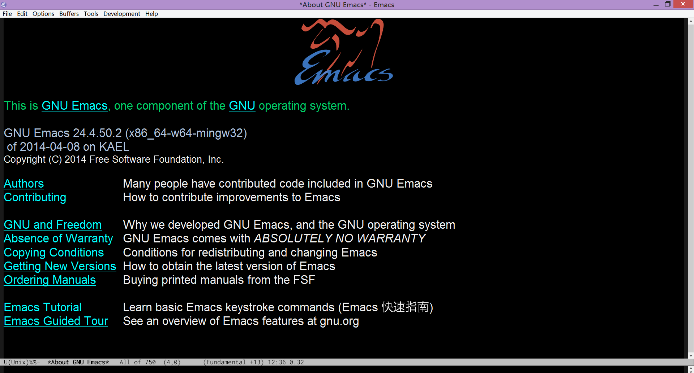
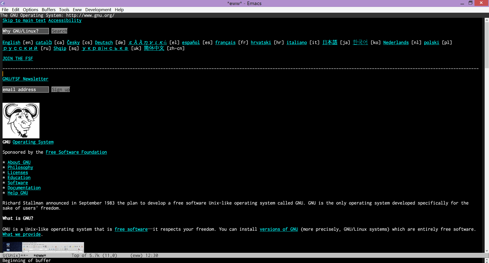

Windows下的64位GNU Emacs编译版emacs-w64
目的
GNU Emacs的官方的MS-Windows版本是32位的，互联网上只有少数几个64位的Emacs版本，而且已有的64位版对源码进行了修改，更新也不及时。本项目的目的是提供面向64位Windows的，基于官方源码的，更新及时的GNU Emacs编译版。
特性
- 源自官方源码，根据开发分支及发行分支构建。
- 原生64位的MS-Windows支持。
- 编译优化。
- 附带JPEG、GIF、PNG、TIFF、SVG、XML2和GnuTLS的支持库。
系统要求
只支持64位的Windows。测试环境为Windows 8.1。
下载
百度网盘镜像。
访问SourceForge上的项目主页下载：
用法
- 下载需要的二进制包(比如emacs-bin-w64-20140402.7z)。
- 用7-Zip等软件解压。
- 双击
emacs/bin里的runemacs.exe运行。
截图


已知问题
本程序属于自用性质，只在我的电脑上测试过。
技术细节
如果你对自己编译感兴趣可以参考本站的编译方法。